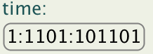

Text effects provide you with an easy way to spice up your fonts without needing to care about sizes and availability of characters like for bitmap fonts. Wile there are various text-effects available, you might encounter a situation in which you want to create your own effect - read on for learning how.
A text effect takes over the rendering and layout of the text of a StringItem and all classes inheriting from StringItem. You can, however, apply your own effect by following these steps:
text-effect CSS attribute in your project's polish.css file.
Create your own visualization by extending de.enough.polish.ui.ItemView or an item-specific ItemView subclass.
You need to implement initContent(Item parent, int firstLineWidth, int lineWidth)
and paintContent( Item parent, int x, int y, int leftBorder, int rightBorder, Graphics g ).
In the initContent you need to calculate required dimensions for visualization and set the fields
contentWidth and contentHeight.
You can override the isValid( Item parent, Style style ) method for ensuring that your view
is only used for specify classes.
You can also animate your view by overriding the animate() method.
In this example we provide a view for de.enough.polish.ui.ClockItem that
uses binary instead of decimal numbers for the visualization.

//#condition polish.usePolishGui
package de.enough.polish.ui.clockviews;
import java.util.Calendar;
import java.util.Date;
import javax.microedition.lcdui.Graphics;
import de.enough.polish.ui.ClockItem;
import de.enough.polish.ui.Item;
import de.enough.polish.ui.ItemView;
import de.enough.polish.ui.StringItem;
import de.enough.polish.ui.Style;
/**
* Visualizes the clock as a binary string, e.g. 101:111 instead of 4:11.
*/
public class BinaryTextClockView extends ItemView {
private final Date date;
private final Calendar calendar;
private final StringItem clockText;
private long lastTimeUpdate;
private ClockItem clockItem;
/**
* Creates a new item view.
*/
public BinaryTextClockView() {
this.date = new Date();
this.calendar = Calendar.getInstance();
this.clockText = new StringItem( null, null );
}
/* (non-Javadoc)
* @see de.enough.polish.ui.ItemView#animate()
*/
public boolean animate() {
boolean animated = super.animate();
long time = System.currentTimeMillis();
if ( (this.clockItem.includeSeconds()
&& time/1000 > this.lastTimeUpdate/1000)
|| (!this.clockItem.includeSeconds()
&& time/(1000*60) > this.lastTimeUpdate/(1000*60)) )
{
this.clockText.setText( updateTime( time ) );
animated = true;
}
return animated;
}
/* (non-Javadoc)
* @see de.enough.polish.ui.ItemView#initContent(de.enough.polish.ui.Item, int, int)
*/
protected void initContent(Item parent, int firstLineWidth, int lineWidth)
{
// cast to object is required since ClockItem officially extends javax.microedition.lcdui.CustomItem:
this.clockItem = (ClockItem)(Object)parent;
this.clockText.setText( updateTime( System.currentTimeMillis() ) );
this.contentWidth = this.clockText.getItemWidth(firstLineWidth, lineWidth);
this.contentHeight = this.clockText.getItemHeight(firstLineWidth, lineWidth);
}
/**
* Updates the shown time.
* @param time the currently shown time
* @return the time as a binary string
*/
protected String updateTime( long time ) {
this.lastTimeUpdate = time;
this.date.setTime(time);
this.calendar.setTime(this.date);
String hour = Integer.toBinaryString( this.calendar.get( Calendar.HOUR_OF_DAY ) );
String minute = Integer.toBinaryString( this.calendar.get( Calendar.MINUTE ) );
String seconds = null;
if (this.clockItem.includeSeconds()) {
seconds = Integer.toBinaryString( this.calendar.get( Calendar.SECOND ) );
}
return this.clockItem.updateTime(hour, minute, seconds);
}
/* (non-Javadoc)
* @see de.enough.polish.ui.ItemView#paintContent(de.enough.polish.ui.Item, int, int, int, int, javax.microedition.lcdui.Graphics)
*/
protected void paintContent(Item parent, int x, int y, int leftBorder,
int rightBorder, Graphics g)
{
this.clockText.paint(x, y, leftBorder, rightBorder, g);
}
/* (non-Javadoc)
* @see de.enough.polish.ui.ItemView#isValid(de.enough.polish.ui.Item, de.enough.polish.ui.Style)
*/
protected boolean isValid(Item parent, Style style) {
// cast to object is required since ClockItem officially extends javax.microedition.lcdui.CustomItem:
return ((Object)parent instanceof ClockItem);
}
/* (non-Javadoc)
* @see de.enough.polish.ui.ItemView#setStyle(de.enough.polish.ui.Style)
*/
protected void setStyle(Style style) {
super.setStyle(style);
this.clockText.setStyle(style);
// remove parent background and border, so that only the clock text contains them:
removeParentBackground();
removeParentBorder();
}
}
You can now register your implementation for easier usage in ${polish.home}/custom-css-attributes.xml:
<attribute name="view-type"> <mapping from="clock-binary-text" to="new de.enough.polish.ui.clockviews.BinaryTextClockView()" appliesTo="ClockItem" /> </attribute>
You use the corresponding item just like normal in your source code:
//#style myClock ClockItem clockItem = new ClockItem( "time: " ); form.append( clockItem );
Now use your ItemView by specifying it in the appropriate style of your polish.css file:
.myClock {
border-type: round-rect;
border-color: gray;
view-type: clock-binary-text;
}
In case you skipped the registration of your implementation in ${polish.home}/custom-css-attributes.xml you can also reference your implementation directly:
.myClock {
border-type: round-rect;
border-color: gray;
view-type: new de.enough.polish.ui.clockviews.BinaryTextClockView();
}
That's it - you've done it!